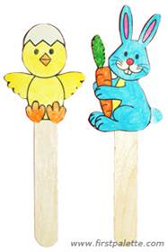
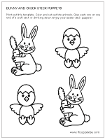
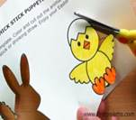
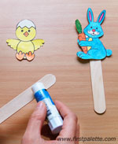

Bunny and Chick Stick Puppets
These easy bunny and chick stick puppets are great to use for spring or Easter-themed finger plays, stories, and learning activities.

Materials
- Printable paper
- Scissors
- Any coloring material
- Craft sticks or drinking straws
- Glue stick
Steps

- Print out this bunny and chick set or you can draw your own animal.

- Color and cut out the animals.

- Apply glue at the tip of a craft stick or drinking straw and stick the animal cut-out onto the glue.
- These stick puppets are great to use for your Spring or Easter-themed finger plays, stories, and learning activities.